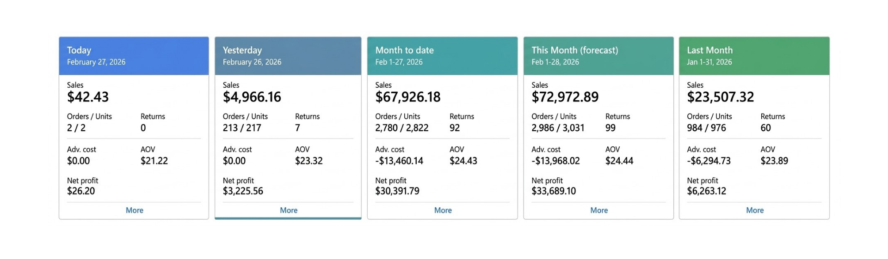

5.4X net profit in 30 days, by spending more on ads — not less.
How GrowthXsell restructured marketplace advertising to scale ad spend 2.2X, triple sales and grow net profit from $6,263 to $33,689 in 30 days — lifting net margin from 26.6% to 46.2%.
An early-stage seller with strong fundamentals — and an expensive growth engine.
The account was doing roughly $23,507 in monthly sales, around 32 orders per day, and keeping $6,263 as net profit — a 26.6% net margin.
The listings had demand and sales were coming back. The problem was the cost of growth: advertising absorbed 26.8% of sales. The opportunity was not simply to spend less. It was to make incremental spend earn its margin.
What we took over: marketplace advertising — budget allocation and pacing, bids by SKU margin, and keyword and placement management.
Growth that cost most of its own margin.
The account could grow. But the way it was buying growth was putting pressure on the bottom line.
Ad spend was choking profit
At 26.8% of sales, advertising was the biggest drag on net margin. Scaling it as-is could grow revenue while shrinking profit.
Fixed weekly plans
Budget was being allocated on a fixed cadence instead of moving toward the SKUs, days and keywords proving the strongest economics.
Low-margin keywords absorbing spend
A share of the ad budget was going to keywords that produced sales but very little profit.
No room for waste
With a 6.1% return rate and a 26.6% starting net margin, inefficient spend had a direct effect on the business.
Grow net profit, not just sales.
Make every ad dollar prove its margin before it was allowed to scale.
- Bids concentrated on high-margin SKUs with organic traction
- Less spend on low-margin keywords and placements
- Ad spend judged on net profit, not sales volume alone
- Scale without eroding margin
Strong organic pull. Weak budget discipline.
Before changing anything, we read sales, profit and ad spend together — by SKU and by day.
The listings could handle more traffic
The account already had product demand. The opportunity was to use advertising to amplify what was working rather than simply buy more top-line revenue.
Spend wasn't following margin
Fixed weekly plans put the same money into low-margin keywords and off-peak days as into the winners.
Spend and margin could rise together
The key was to scale only where incremental advertising was proving bottom-line profit gains.
The account needed a profit rule
Sales could no longer be the only permission to scale. Margin had to decide where the next dollar went.

Making ad spend follow profit.
The budget wasn't cut. It was pointed at the parts of the account that could turn additional spend into additional profit.
Diagnose
Read sales, profit and ad spend together by SKU and day to find where margin was leaking.
Rebuild the budget
Move away from fixed weekly allocation and create a more responsive pacing structure.
Bid on margin
Scale bids on high-margin SKUs with proven organic traction.
Prune waste
Reduce spend on low-margin keywords and placements even when they still generated sales.
Scale what proves profit
Let budget grow only where net profit gains showed up.
Advertising, restructured around unit economics.
Budget & pacing
- Reallocated budget toward high-margin SKUs
- Changed pacing so spend could respond to performance
- Scaled spend where incremental profit was being proven
- Protected margin instead of chasing revenue alone
Bids, keywords & placements
- Bids scaled on high-margin SKUs with proven organic traction
- Low-margin keywords and placements lost budget
- Performance was judged on net profit and margin
- Sales volume was treated as an input — not the final score
More spend. Far more profit. A lower ad ratio.
In one month the account tripled sales, grew net profit 5.4X, and cut the share of sales going to ads by 7.7 percentage points.
Net profit / month · 26.6% net margin · 26.8% ad spend ratio
Net profit / month · 46.2% net margin · 19.1% ad spend ratio
| Metric | Before | After | Change |
|---|---|---|---|
| Net sales | $23,507 | ~3X higher | ↑ 3X |
| Net profit | $6,263.12 | $33,689.10 | ↑ 5.4X |
| Net margin | 26.6% | 46.2% | ↑ 19.6 pts |
| Ad spend ratio | 26.8% | 19.1% | ↓ 7.7 pts |
| Return rate | 6.1% | Source reports do not specify a post-change figure | — |
What drove the improvement.
“Net profit grew 5.4X” is the result. This is the mechanism behind it.
Margin efficiency
Capital only flowed into ad groups that were proving bottom-line net profit gains, so extra spend could pay for itself instead of diluting margin.
Organic flywheel
High-margin SKUs with organic traction received more support, allowing advertising to reinforce products that already had demand.
Spend followed the calendar
Budget became responsive to when the account could convert spend efficiently instead of following a static weekly plan.
Profit became the scorecard
Sales alone stopped being the permission to scale. Net profit and margin became the decision criteria.
A profit run-rate five times larger.
Net profit went from $6,263 to $33,689 in a month, on sales that tripled and an ad ratio that fell from 26.8% to 19.1%.
Annualized net profit run-rate after the change, up from about $75K based on the monthly run-rate figures in the source case study.
Almost half of every sales dollar was net profit.
The important shift wasn't simply more advertising. It was a lower advertising ratio while profit expanded dramatically.
“GrowthXsell completely restructured how our spend converts. Doubling our margin while tripling our top line in one month was gamechanging.”
Scaling isn't about higher bids. It's about enforcing true unit economics.
Ad spend grew 2.2X in this account and profit grew 5.4X because only spend that proved net profit was allowed to scale. Point the budget at margin, and spend, sales and profit can all rise in the same month.
- Let profit decide the budget. Ad groups earn more spend by proving net profit, not sales.
- Prune what doesn't pay. Low-margin keywords and placements lose budget, even when they sell.
- Scale the winners. High-margin SKUs with organic traction get the capital to grow.
Want your ad spend growing profit, not just sales?
We'll look at where your ad budget goes by product, day and keyword — and show you where margin is leaking and where it can scale.